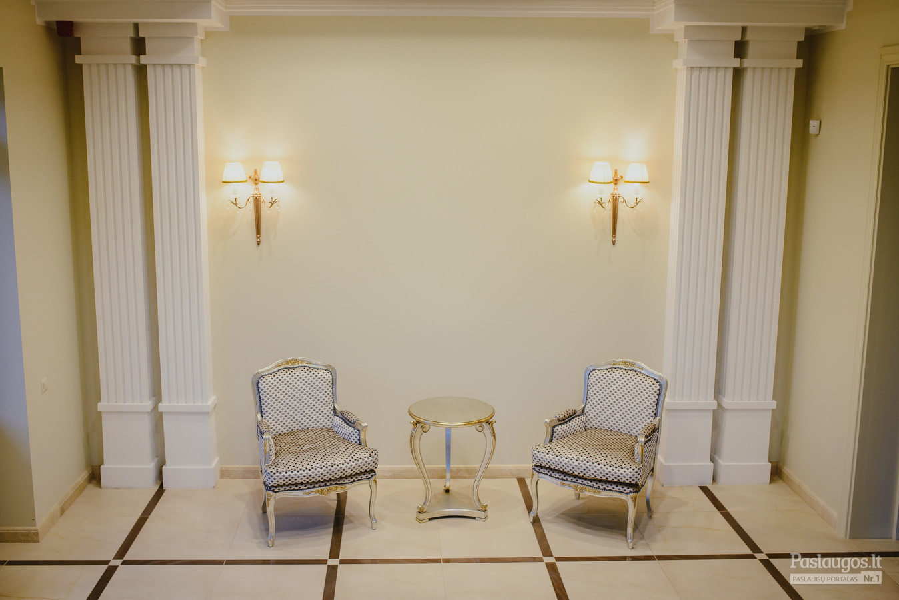
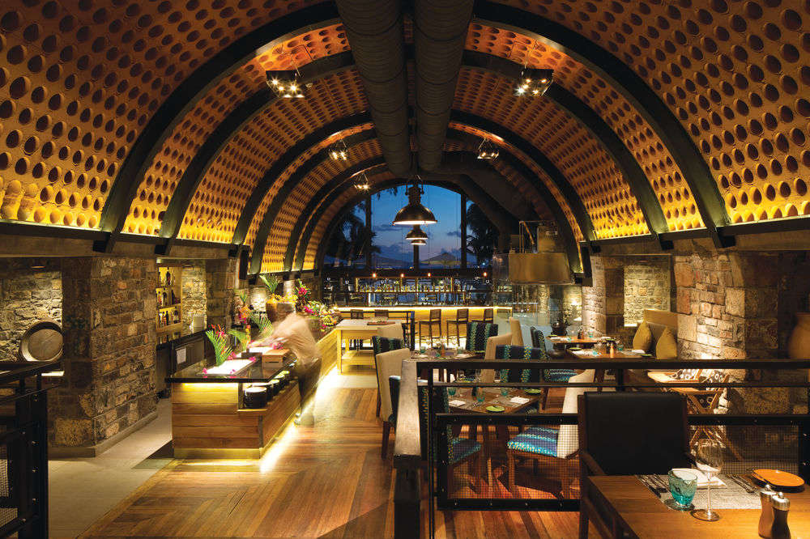
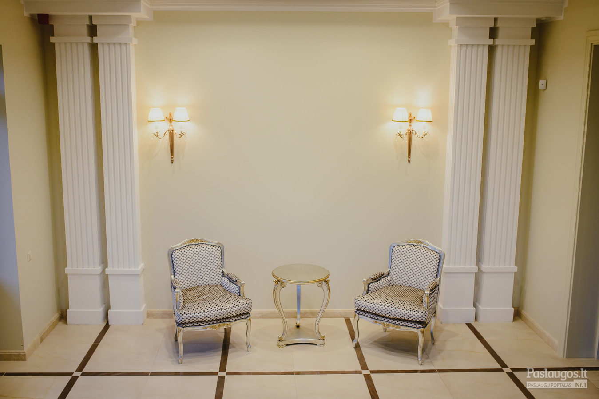
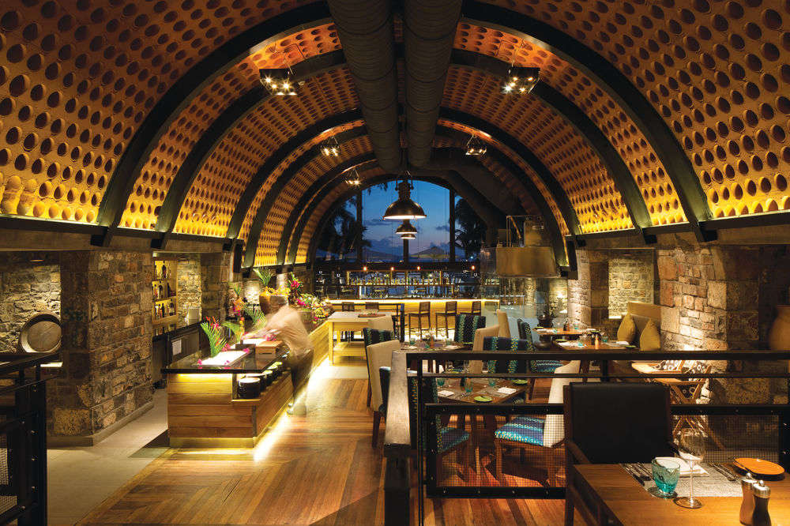

Dienos pietūs | Open Restoranas
2020.10.27 13:30

Skip to content Primary Menu
Open Restoranas
OPEN restoranas by „Skonio slėnis | Gourmet Catering“
Dienos pietūs Pusryčiai Pasiūlymai Kontaktai FacebookDienos pietūs
0PEN pietūs
09.30 | 11:00-15:00
Savo skaniai pasotinančius DIENOS PIETŲ patiekalus taip pat galime PRISTATYTI IKI PAT JŪSŲ namų ar ofiso DURŲ visame Vilniaus mieste pasirinkto 1 val. laiko rėžyje. ŠEŠTADIENIAIS restoranas nedirba, bet savo siūlomus DIENOS PIETŲ patiekalus, užsakytus per www.MOKSLININKU.lt svetainę, pristatome beveik KIEKVIENĄ DIENĄ (I-VI) nuo 11 iki 17 val.
Pagrindiniai patiekalai
Vištienos kumpeliai
€ 3.90saldžiarūgščiame padaže, pateikiami su ryžiais
Kalakutienos kepsnys
€ 4.60pateikiamas su ryžiais ir šviežiomis daržovėmis
Šviežių kopūstų balandėliai
€ 4.50patiekiami su bulvių koše
Garinta menkė
€ 4.60pateikiama su ryžiais ir kalafiorų salotomis
Kiaulienos išpjova
€ 4.80su „Café de Paris“ padažu, pateikiama su bulvytėmis ir šviežiomis daržovėmis
Bulvių apkepas
€ 4.40su kiauliena, pateikiamas su grietinės padažu
Lapinės salotos
€ 4.20su ožkos sūriu, pagardintos žolelių padažu
sriub0s
Daržovių sriuba
€ 1.20Karališka žuvienė
€ 2.90DESERTAI IR GĖRIMAI
Apelsinų sultys GRANINI
€ 1.50250 ml
Obuolių sultys GRANINI
€ 1.50250 ml
Vynuogių sultys GRANINI
€ 1.50250 ml
Pomidorų sultys GRANINI
€ 1.50250 ml
Įvairių vaisių nektaras GRANINI
€ 1.50250 ml
Greipfrutų nektaras GRANINI
€ 1.50250 ml
Gazuotas gėrimas COCA-COLA
€ 1.60250 ml
Gazuotas gėrimas SPRITE
€ 1.60250 ml
Gazuotas gėrimas FANTA
€ 1.60250 ml
0PEN ATVIRI VISIEMS
PICA
Trečiadieniais ir penktadieniais – picų diena.
Š0NKAULIUKAI
O čia fantazuojam mes! Bet proto ribose – marinuodami šonkaulius mūsų ypatingame marinate. Siūlome ragauti, o svečius vaišinti būtina, nes Lietuva – ne kiaulių, o kiaulienos kraštas.
T0RTADIENIAI
Švenčiate gimtadienį? Užsisakykite tortą!
0PEN PUSRYČIAI
8:00-11:00
Kasdien nuo 8:00 iki 11 val. Geriausiai apibūdinti OPEN pusryčius būtų galima svečio atsiliepimu: „Varškėtukai buvo tokie geri, nerealiai! Pasijutau kaip pas mamą!“. Nepamirškite pasilepinti ir kokybiškos TASTE MAP kavos puodeliu. Ją jums paruoš mūsų profesionalus barista, tad bus ne ta gardžioji užpiltinė kaip pas mamą, o švelni latė, purus kapučino ar stiprus espreso!
0PEN PASIŪLYMAI:
VYTURIAI
Anksti kėlęs nesigailėsi! Kiekvieną darbo dieną pusryčiaujančių OPEN restorane laukiame su gausiu ir abejingų nepaliksiančiu tinkamai dienos pradžiai skirtu meniu jau nuo 8:00 val .
IŠSINEŠIMUI
Norite valgyti parke, biure su kolegomis ar parsinešti namo? Savo pasirinktą dienos patiekalą galite išsinešti! Kviečiame atsinešti savo daugkartinio naudojimo indelius arba vietoje įsigyti iš lengvai yrančių medžiagų pagamintą vienkartinių indų rinkinį, kainuojantį vos 50 ct .
PELĖDOS
Patinka valgyti vėlai, kuomet restorane ramiau, mažiau lankytojų? Turime gerų žinių – nuo 14 val. vėlyvųjų pietų metu taikoma 10% nuolaida dienos patiekalams iš savitarnos zonos.
by „Skonio slėnis | Gourmet Catering“
K0ntaktai
(8-643) 67134 Vito Gerulaičio g. 1 Vilnius, Lithuania LT-08200Darb0 laikas
Pirmadienis Penktadienis
8:00 16:00 val.
- Restoranas - Vanagupė
- Armėniškas restoranas | Grill Patiekalai | Armenian Grill
- Restoranas Natali - Event guru
- Bizarre Restoranas ir Baras - Tavo pasaulis senamiesčio ...
- Restoranas Panevėžyje „Déjà vu“ - Viešbutis „Romantic ...
- Restoranas - Drevernos uostas
- Restoranas - ORO Dubingiai
- Kuchmistrai - Didikų virtuvė
- 30 Geriausių restoranų - 2019 - Nr.1 - Džiaugsmas
- Unikalioje Senamiesčio vietoje įsikūrė naujasis L ...
- Restoranas - Vanagupė
Beje, visi pagrindiniai ingredientai čia yra lietuviški: „Galima sakyti, esame Tymo turgaus restoranas – apie 70 proc. produktų keliauja iš ten“, – išduoda Martynas. Be to, šis restoranas tobulėja ne metais, o mėnesiais: „Pats pastebiu, kad dabar daug geriau vytiname mėsą, rauginame daržoves ir pan.
- Armėniškas restoranas | Grill Patiekalai | Armenian Grill
Restoranas. Europietiškų tradicijų virtuvė, vertinantiems gurmanišką ir sveiką maistą . Kviečiame apsilankyti jaukiame restorane, kuris puikiai įvertintas nuolatinių mūsų svečių. Rytais čia kviečiame paskanauti gausių ir gardžių pusryčių, dienos metu greitai papietauti, vakare – jaukiai pasimėgauti europietiškos ...
- Restoranas Natali - Event guru
ŠEŠTADIENIAIS restoranas nedirba, bet savo siūlomus DIENOS PIETŲ patiekalus, užsakytus per www.MOKSLININKU.lt svetainę, pristatome beveik KIEKVIENĄ DIENĄ (I-VI) nuo 11 iki 17 val. Pagrindiniai patiekalai. Vištienos kumpeliai. € 3.90. saldžiarūgščiame padaže, pateikiami su ryžiais.
- Bizarre Restoranas ir Baras - Tavo pasaulis senamiesčio ...
Esame armėniškas restoranas kuriame teikiami nuostabūs armėniško tipo grill patiekalai. Štai delfi nuoroda, kurioje yra aprašytas apsilankymas mūsų restorane – Staipsnis 1. Taip pat mūsų šefai yra puikūs savo srities ekspertai, kurie puikiai žino apie nuostabų maistą.
- Restoranas Panevėžyje „Déjà vu“ - Viešbutis „Romantic ...
Sveiki atvykę! Restoranas „KUCHMISTRAI“ – autentiškoje Zyplių dvaro aplinkoje įkurtas ir Lietuvos didikų virtuvės paveldą puoselėjantis restoranas, siekiantis išsaugoti ne tik kulinarinį, bet ir kultūrinį krašto paveikslą.
- Restoranas - Drevernos uostas
Restoranas Galerija Kviečiame apsilankyti restorane „Dreverna“ , kuriame rafinuotas patiekalų meniu ir elegantiškas pateikimas nustebins ir pakerės, o dauguma mūsų žuvies patiekalų gaminami iš šviežios, vietos žvejų sugautos žuvies.
- Restoranas - ORO Dubingiai
SAKARTVELO Esame gruziniškas restoranas, teikiantis nuostabų, autentišką gruzinų maistą. Kokybę „Sakartvelo“ garantuoja rinktiniai produktai ir net tokie niuansai, kaip mėsos paruošimas tik pačių gruzinų, kurių maisto kokybė yra nepalyginamai aukštesnė. Dabar gruzinišką maistą galite užsisakyti ir į namus! Užsisakyti! meniu Gruzinų restoranas Kas tas sakartvelo?
- Kuchmistrai - Didikų virtuvė
Restoranas „Onorė“ pasitiks nuo pat ankstyvo ryto ir bus pasiruošęs Jus palepinti. Nesvarbu, ar tai darbingos dienos pradžia su puodeliu stipraus espresso, ar tingūs savaitgalio pusryčiai su čia pat iškeptomis bandelėmis ir garuojančiu omletu.
- 30 Geriausių restoranų - 2019 - Nr.1 - Džiaugsmas
2018-06-20 Paskelbtas geriausias pasaulio restoranas, o jau kitą savaitę paaiškės ir Lietuvos Vakar Ispanijos Bilbao mieste nuaidėjo pasaulio restoranų apdovanojimų ceremonija. Specialaus renginio metu buvo paskelbtas kasmetinis 50 geriausių pasaulio restoranų sąrašas (The World‘s 50 Best Restaurants), o pirmoje vietoje šiemet ...
- Unikalioje Senamiesčio vietoje įsikūrė naujasis L ...
Bizarre restoranas yra įsikūręs pačioje senamiesčio širdyje. Trys skirtingos virtuvės - trys skirtingos patirtys ir nepamirštami įspūdžiai.
Beje, visi pagrindiniai ingredientai čia yra lietuviški: „Galima sakyti, esame Tymo turgaus restoranas – apie 70 proc. produktų keliauja iš ten“, – išduoda Martynas. Be to, šis restoranas tobulėja ne metais, o mėnesiais: „Pats pastebiu, kad dabar daug geriau vytiname mėsą, rauginame daržoves ir pan.
Restoranas. Europietiškų tradicijų virtuvė, vertinantiems gurmanišką ir sveiką maistą . Kviečiame apsilankyti jaukiame restorane, kuris puikiai įvertintas nuolatinių mūsų svečių. Rytais čia kviečiame paskanauti gausių ir gardžių pusryčių, dienos metu greitai papietauti, vakare – jaukiai pasimėgauti europietiškos ...
ŠEŠTADIENIAIS restoranas nedirba, bet savo siūlomus DIENOS PIETŲ patiekalus, užsakytus per www.MOKSLININKU.lt svetainę, pristatome beveik KIEKVIENĄ DIENĄ (I-VI) nuo 11 iki 17 val. Pagrindiniai patiekalai. Vištienos kumpeliai. € 3.90. saldžiarūgščiame padaže, pateikiami su ryžiais.
Esame armėniškas restoranas kuriame teikiami nuostabūs armėniško tipo grill patiekalai. Štai delfi nuoroda, kurioje yra aprašytas apsilankymas mūsų restorane – Staipsnis 1. Taip pat mūsų šefai yra puikūs savo srities ekspertai, kurie puikiai žino apie nuostabų maistą.
Sveiki atvykę! Restoranas „KUCHMISTRAI“ – autentiškoje Zyplių dvaro aplinkoje įkurtas ir Lietuvos didikų virtuvės paveldą puoselėjantis restoranas, siekiantis išsaugoti ne tik kulinarinį, bet ir kultūrinį krašto paveikslą.
Restoranas Galerija Kviečiame apsilankyti restorane „Dreverna“ , kuriame rafinuotas patiekalų meniu ir elegantiškas pateikimas nustebins ir pakerės, o dauguma mūsų žuvies patiekalų gaminami iš šviežios, vietos žvejų sugautos žuvies.
SAKARTVELO Esame gruziniškas restoranas, teikiantis nuostabų, autentišką gruzinų maistą. Kokybę „Sakartvelo“ garantuoja rinktiniai produktai ir net tokie niuansai, kaip mėsos paruošimas tik pačių gruzinų, kurių maisto kokybė yra nepalyginamai aukštesnė. Dabar gruzinišką maistą galite užsisakyti ir į namus! Užsisakyti! meniu Gruzinų restoranas Kas tas sakartvelo?
Restoranas „Onorė“ pasitiks nuo pat ankstyvo ryto ir bus pasiruošęs Jus palepinti. Nesvarbu, ar tai darbingos dienos pradžia su puodeliu stipraus espresso, ar tingūs savaitgalio pusryčiai su čia pat iškeptomis bandelėmis ir garuojančiu omletu.
2018-06-20 Paskelbtas geriausias pasaulio restoranas, o jau kitą savaitę paaiškės ir Lietuvos Vakar Ispanijos Bilbao mieste nuaidėjo pasaulio restoranų apdovanojimų ceremonija. Specialaus renginio metu buvo paskelbtas kasmetinis 50 geriausių pasaulio restoranų sąrašas (The World‘s 50 Best Restaurants), o pirmoje vietoje šiemet ...
Bizarre restoranas yra įsikūręs pačioje senamiesčio širdyje. Trys skirtingos virtuvės - trys skirtingos patirtys ir nepamirštami įspūdžiai.
 


